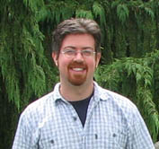
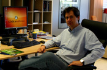

Dr. Dobb's Journal August 2007
Employer: Self
Job: Leitender Entwickler (Senior Developer)
DDJ: Where do you work?
SW: Mostly at home in Berlin, sometimes at the client site.
DDJ: What does your work consist of?
SW: I develop software myself, but I also tell other developers what to do, while I develop prototypes or architectures. My major client, for many years now, is Fischer-Uhrig Engineering [where I'm the] lead developer of a system for simulation of hydraulic networks. Sometimes, I'm Project Manager for customer-specific projects, sometimes Team Leader for other software projects—recently, a Web 2.0 app.
DDJ: What do you like about your job?
SW: Being intellectually challenged, and being faced with the mistakes I made yesterday, or last year, or even 10 years ago—I've been working on the simulation project for more than a decade. Producing something that helps other people, and helps to make things smoother.
DDJ: What do you find challenging about your job?
SW: Presenting complex and difficult technical tasks or functions in a way that does not leave too many questions. Delivering well-developed software that either works as expected or otherwise communicates.
DDJ: What have you found that makes your job easier?
SW: Thinking, batchprocessing, and a clear mind of what's important and what's not so important. Sometimes, regular expressions. And of course, working where and when I want. That helps me and my clients.
Employer: SweetScape Software
Job: Sole Proprietor
DDJ: Where do you work?
GS: SweetScape Software, a small ISV located in beautiful Prince Edward Island, Canada.
DDJ: What's your job there?
GS: I'm the owner and chief architect of our main software product, 010 Editor.
DDJ: What do you like about your job?
GS: I love the creative aspects of software: Being able to come up with original ways of solving problems that other people haven't thought of and then designing the product and seeing it through to completion. I see coding almost as an art form and I'm not happy until I've reworked my code to make it as simple as possible. Oh, and I love getting e-mails from customers telling us how much time our software has saved them.
DDJ: What do you find challenging about your job?
GS: Having to wear so many different hats. With a small company you get to be involved in everything from design to coding, sales, marketing, and support. It's ever-changing but always interesting.
DDJ: What have you found that makes your job easier?
GS: We're now in the middle of a transition to Qt, which appears to be a great toolkit and big timesaver for us. Qt is going to allow us to go multiplatform, which we view as the future of our company.
Employer: Codice Software
Job: CEO
DDJ: As CEO, what do you do at Codice?
PS: I've been gravitating from a technical position to full CEO responsibilities. I always push to get involved in some development, [but] it is not easy because I spend more and more time on nontechnical tasks. We follow SCRUM, so I play the role of product owner, too.
DDJ: What do you like about your job?
PS: I always have this sort of "racing feeling" you get when you try to create world-class software. Creating system-level software, there are always new things to learn, new features to implement, new ideas to explore. I can contribute in several ways: providing requisites, proposing test scenarios, looking for new commercial strategies...even coding when I have the time!
DDJ: What do you find challenging about your job?
PS: We all feel we are in a tough competition with almost all the SCM solutions out there. We are continuously making Plastic SCM faster, more powerful, trying to incorporate new graphical capabilities. We always liked game developing, and we try to include those kinds of things into Plastic.
DDJ: What have you found that makes your job easier?
PS: Agile methods. We do use SCRUM. Mono, .NET, Visual Studio, and trying to empower the people you work with, to make them feel they can really influence the product, to set up a team in the most pure sense.